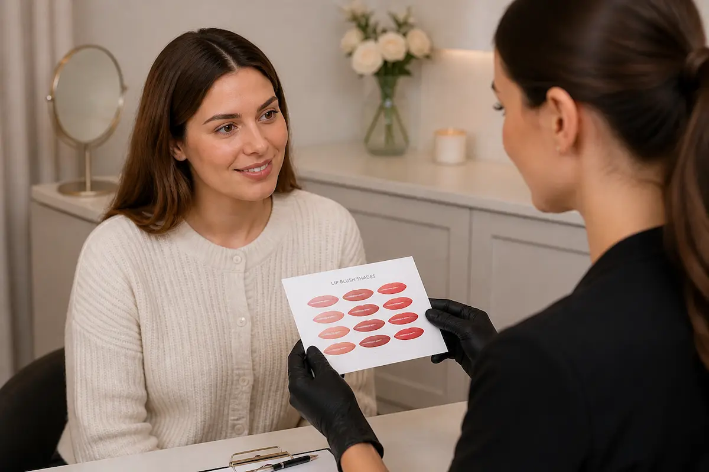

You prefer subtle results
The treatment is designed around soft enhancement rather than a heavy lipstick effect.
Lip blush suitability
Lip blush can be a beautiful choice if you want soft colour, gentle definition and a more polished look without daily lipstick or liner. Suitability is personal, so the best results begin with a thoughtful consultation.
Gemma welcomes clients from Hull, Hessle, Beverley, Cottingham and East Yorkshire who want natural permanent makeup that still feels like them.

Good candidates
You want your lips to look naturally fresher, more even or softly defined. Many clients choose lip blush because their natural lip colour has faded, their border feels less clear, or they want a low-maintenance alternative to daily lip makeup.
The treatment is designed around soft enhancement rather than a heavy lipstick effect.
Carefully chosen pigment can help lips look more balanced and softly refreshed.
Lip blush can add everyday colour and shape without needing liner every morning.
Consultation-led
Lip blush is not suitable for every client. Health, medications, skin history, cold sore history, previous lip work and expectations may all need to be discussed before treatment.
The full lip blush treatment page explains the treatment and pricing. You may also find the permanent makeup aftercare guide helpful before booking.
FAQ
Lip blush may suit clients who want softer colour, improved lip definition or a more polished everyday look with less reliance on makeup.
No. Suitability depends on your health, lips, skin, lifestyle and goals, which is why consultation and honest guidance are important.
A consultation is strongly recommended so Gemma can discuss your goals, assess suitability and explain the treatment and aftercare clearly.
Personal advice
Book a consultation with Gemma for calm, honest guidance before treatment.